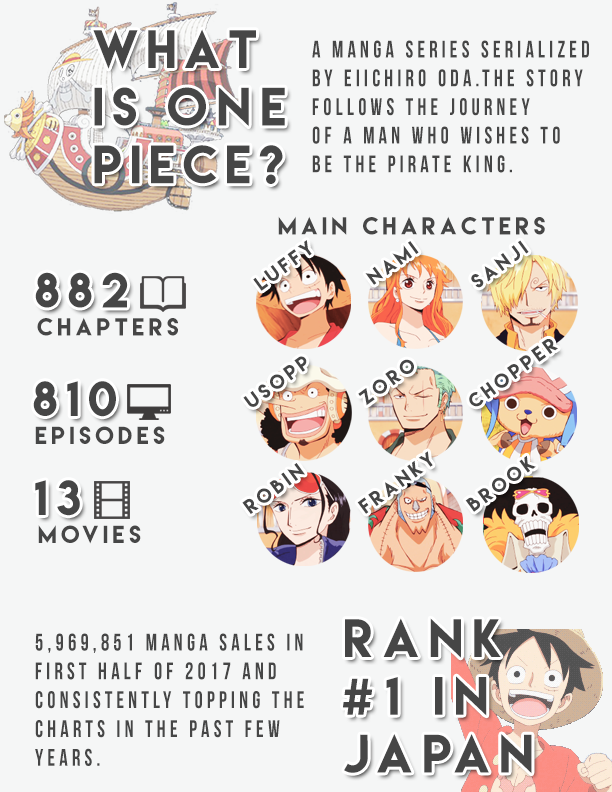

Infographic

I created an infographic for my favorite anime/manga series - One Piece. I included some statistics as well as the top 9 main characters. I made some text more prominent by adding a white outline followed by a drop shadow. Also, I mirrored the design for the top and bottom portions of this infographic. Hopefully through this people will have a better understanding of One Piece.